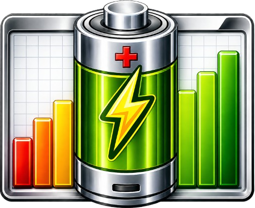
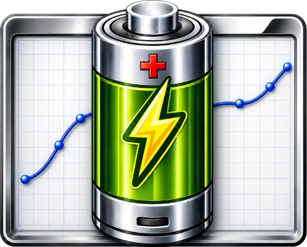
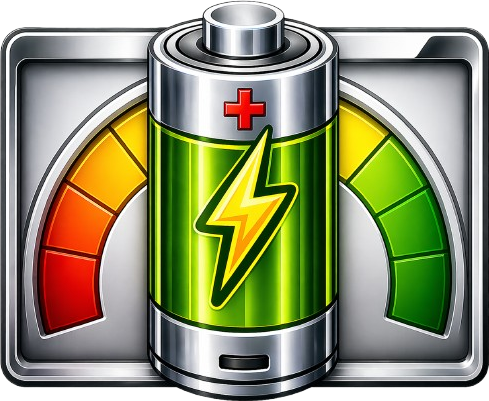
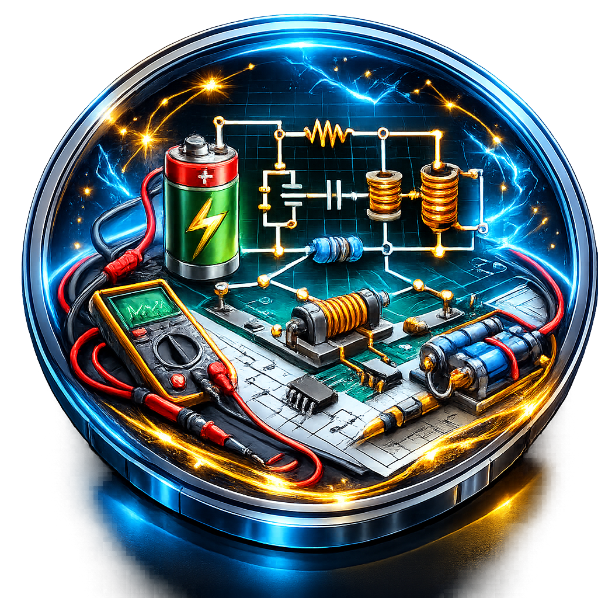
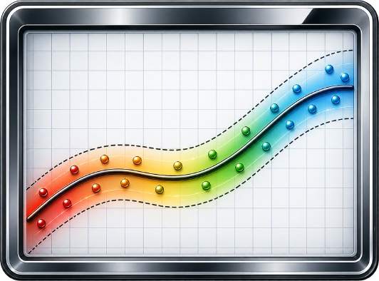
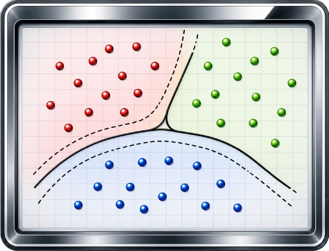
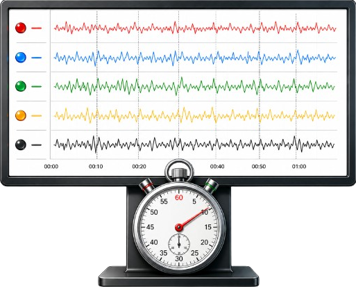

Math Studio
This tool supports mathematical analysis and computation workflows, including equation handling, symbolic and numerical operations, and interactive problem solving within the CortexLab environment.
This application is implemented using the Python programming language and employs the PySide6 library to build a flexible, modular, and user friendly Graphical User Interface (GUI). It integrates multiple specialized tools into a unified environment, each targeting different aspects of battery modeling, diagnosis, real-time monitoring, and performance evaluation.
This tool supports mathematical analysis and computation workflows, including equation handling, symbolic and numerical operations, and interactive problem solving within the CortexLab environment.

This tool provides an organized viewer for manuals, references, and application guidance. It helps users navigate tool descriptions, usage steps, and supporting technical notes.

This tool provides an interactive graphical simulation environment for constructing battery pack configurations, supporting Series, Parallel, and Combined (Series Parallel) arrangements. It enables users to define the number of cells and modules and visualizes the resulting topology.

This tool estimates key battery performance indicators, including State of Charge (SOC), State of Health (SOH), State of Power (SOP), Remaining Useful Life (RUL), and Depth of Discharge (DOD). It supports different estimation methods and allows exporting results.

This tool performs Open Circuit Voltage based SOC estimation using polynomial fitting and chi-squared error analysis. It supports importing data, plotting OCV-SOC curves, and exporting fitted models.

This tool supports offline SOC estimation workflows, including Coulomb Counting, rated capacity estimation, and comparison plots. It includes configuration, analysis, and export features.

This tool supports equivalent-circuit based battery modeling workflows, including model structure definition, parameter identification, and analysis of battery dynamic behavior.

This tool supports generating and analyzing drive cycles, including route based motion profiles and visualization for EV related studies.

This tool supports regression based prediction workflows, including data upload, feature and target selection, training and testing, evaluation metrics, plotting, and exporting models.

This tool supports classification workflows, including data upload, feature and class selection, training and evaluation, confusion matrix, and exporting classifiers.

This tool interfaces with Arduino based sensing to monitor voltage, current, and temperature. It also supports real-time Coulomb Counting and data driven predictions using trained models.
This version includes Math Studio, Supplementary Materials, Battery Configuration, Battery Performance Metrics, OCV-SOC Modeling, Battery State Estimation, Equivent-circuit Modeling, Drive Cycle Generator, Machine Learning Techniues-based Regression, Machine Learning Techniues-based Classifcation, and Real-Time Monitoring.
Date: 14 April 2026